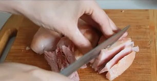
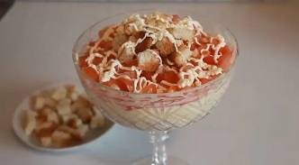

Рецепты

Ингредиенты:
Копченая курица или окорочок (курица естественно не целая, а часть), 2 помидора, 100 граммов сыра твердых сортов, 2 зубчика чеснока, сухарики из белого хлеба или упаковка готовых, соль и перец по вкусу, майонез для заправки салата.
Рецепт:
1. Изначально салат слоеный - то есть собирается послойно. Но учитывая, что в моей семье его все равно перемешивают, то на обычный стол готовлю просто в салатнице все перемешивая. На вкус это не влияет, но рецепт укажу как положено..
2. Мякоть курицы освобождаем от костей и нарезаем некрупным кубиком. Если кожица жесткая, то удаляем ее, чтобы не портить ей нежность салата.

3. Помидоры нарезаем также небольшими кубиками. Выдавливаем к томатам чеснок через давилку, слегка присаливаем и перемешиваем.
4. На дно креманки или салатницы кладем курочку, слегка смазываем майонезом и покрываем помидорами чесноком. Делаем майонезную сеточку и посыпаем натертым на мелкой терке сыром. Если перемешиваю ингредиенты, то натираю сыр на крупной терке.
5. Поверх сыра кладем горсть сухариков и оставляем салат для пропитки на часик. По прошествии времени подаем к столу.
6. Вкус у салата очень нежный с копченой, кисленькой и острой ноткой. Дополняют вкус и структуру хрустящие сухарики.
С (наступающим) Новым годом. Конечно извините если он прошел).
Готово! Приятного аппетита!

10 декабря, 2022 года.